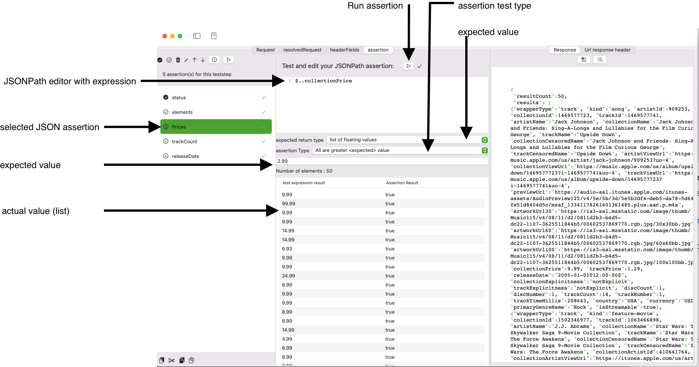

Assertions
Assertions are used for HTTP Teststeps and SOAPTeststeps to automate response validations. You can create assertions for various content types, using a number of user-friendly visual editors:
- HTTP base information
- JSON
- SOAP/XML
- Images
- PDF files
HTTP assertion editor
An HTTP assertion verifies basic HTTP-URL request specific information. HTTP Assertions are available for both HTTP Teststep and SOAP Teststep.
Assertion value
Currently, there are three different data, that can be assessed:
- Status (HTTP Status)
- Data length (Binary data length)
- Response time (measured in ms)
Assertion test type
The assertion test type depends on the value type being assessed. For HTTP assertions these are integer values, so the assertion test type provides a set of options that make sense for integers.
- is equal to (single expected value)
- is smaller than (single expected value)
- is greater than (single expected value)
- is between ... and ...
- is not between ... and ...
- is in List
Expected value
The expected value depends on the assertion test type and is either:
- single expected value
- a lower range limit and an upper range limit
- a list of values
Run assertion
Run assesses the current response data against the assertion test type, the expected value and the actual value. The actual HTTP values are kept in memory, so you can rerun a test as often as you want and change it.
Image Assertion editor
An Image assertion uses a trained machine learning model to capture the text contents of a file.

Query Type
As a first step, you need to configure, where the image data should be taken from. There are four options:
- JSONPath, enter the JSONPath expression to the binary data in the response that represents the image.
- XPath 1 (with function support), enter the XPath expression to the binary data that represents the image. Note: If you work with MTOM, you will need to select the href attribute which holds the content-ID reference.**
- XQuery / XPath 2 (no function support), enter the XPath expression to the binary data that represents the image.
- Plain Document data, the response is expected to hold binary data that represent the image.
Configure your Image assertion
You have three options to check Text content on an image
- Contains text enter the expected text.
- Contains text (ignore case), enter the expected text.
- Barcode, enter the expected payload
The blue run button together with the result status (green checkmark) validates the assertion and gives you immediate feedback.
Preview
When you run the query (blue run button), APIJockey TEST will try to read the Image data, supported types are TIFF, PNG, JPEG, GIF and PDF. IF this is successful you will see the received image in the preview, together with the assertion run results as in the screenshot below:

Query result
It seems odd that both preview and response view show the same content. This is the case as the response contains the image only. In other cases you might have a JSON Response or a SOAP Response and would apply JSONPath, XQuery or XPath to extract the Base64 encoded data, which would then internally be transformed to binary image data. If this is the case, you will see another tab Query Result that should help you identify, what part of the response document is returned by your query.
Text/Barcode identification
When the assertion run is completed you will see a tab Text identification or Barcode identification depending on your Assertion type. This tab holds a list of Texts / Barcode payload found during the AI-scan together with a confidence vote. This can help you decide, if you want to run the assertion automatically or manually only, as a low confidence vote might be an indicator for a hit that is on reliably reproduceable. Also keep in mind that ML-model are non-deterministic. In our sample, the text identification gives these results:
JSON assertion editor
The JSON assertion editor allows you to configure and run assertions against JSON response data with JSONPath. JSONPath can return a single (complex) value or a list of values.

JSONPath editor with expression
Writing assertions can be cumbersome if you need to work with several query languages, like SQL, JSONPath and XPath to mention some of them. APIJockey TEST supports you with a large set of predefined queries that can apply on your JSON objects. The idea is to let you query the JSON objects with a small subset of JSONPath expressions and assert these objects in various ways by configuring what you actually want to test. A JSON assertion expects a valid JSONPath expression. You may enter you assertion here. The JSONPath assertion will be executed against the current response. In case of errors, these will be displayed in the editor.
Expected return type
When you edit a JSONPath Expression, you need to select the type of return value that you expect. We will use this information to provide an appropriate set of assertion test types: The JSON assertion in the above screenshot selects a list of prices. Thus, the expected return type is set to list of floating values. You have the following list of expected return types:
Return types that expect one value
The assertion will fail, if the expected return type does not equal the actual return type, e.g. expected: List of booleans, actual: single boolean. The assertion type determines the way the assertion is verified:
Boolean value
- true
- false
Date with formatting
- Date is day of run date
- Date is not nil
- Date is nil/null or not present
- Date is equal expected day
-
Date has equal distance from ... based on current timestamp : When you expect a date to be 3 days in the past, whenever you run the testcase, you would pick the current day - 3 days. The assertion will verify if the actual day is three days before the current execution date.
-
Date is day of run date (today)
- Date is day before run date (today)
- Date is day after run date (today)
- Date applies formatting
Floating point value
A Floating point is a double or float value.
- Number is equal ...
- Number is smaller than ...
- Number is greater than ...
- Number is between lower ... and upper ...
- Number is NOT between lower ... and upper ...
Integer value
- Number is equal ...
- Number is smaller than ...
- Number is greater than ...
- Number is between lower ... and upper ...
- Number is NOT between lower ... and upper ...
- Number is in expected list
Text
Text is a good option, if your uncertain about the return value type, but know, there is no array being returned.
- Text contains expected
- Text equals expected
- Text begins with expected
- Text ends with expected
- Text contains expected (case insensitive)
- Text equals expected (case insensitive)
- Text begins with expected (case insensitive)
- Text ends with expected (case insensitive)
- Text is empty
- Text is NOT empty
- Text has expected length
- Text has minimum expected length
- Text has maximum expected length
Dictionary
JSON is constructed from Arrays and Dictionaries, so assessing content of dictionaries is a common check
- Dictionary entry exists (Dictionary contains key)
- Dictionary entry NOT exists (Dictionary does not contain key)
- Dictionary entry has value
- Dictionary entry has NOT value
- Element contains expected
- Dictionary contains expected (case insensitive)
- Dictionary NOT contains expected
- Dictionary NOT contains expected (case insensitive)
List of values (Arrays)
JSONPath may return arrays, APIJockey Test makes it easy to perform validation for all of the entries
List of boolean values
- All elements return true
- All elements return false
List of integer values
- All values equal expected
- All values smaller expected
- All values greater expected
- All values between lower and upper range
- All values NOT between lower and upper range
- number (of array element) count equals expected
- number (of array element) count smaller expected
- number (of array element) count greater expected
- number (of array element) count between ... and ...
- number (of array element) count NOT between ... and ...
List of date values
- All dates are not nil
- All dates are nil or not present
- All values are equal expected
- All values are equal to relative date based on current timestamp :
When you expect a date to be 3 days in the past, whenever you run the testcase, you would pick the current day - 3 days. The assertion will verify if the actual day is three days before the current execution date.
- All dates are today
- All dates are yesterday
- All dates are tomorrow
- All dates apply formatting
List of floating values
- All have expected value
- All are smaller expected
- All are greater expected
- number (of array element) count equals expected
- number (of array element) count smaller expected
- number (of array element) count greater expected
- number (of array element) count between ... and ...
- number (of array element) count NOT between ... and ...
- All elements between lower and upper range
- All elements NOT between lower and upper range
List of text values
- All values equal expected expected
- All values begin with expected
- All values end with expected
- All values contain expected
- All values begin with expected (case insensitive)
- All values end with expected (case insensitive)
- All values contain expected (case insensitive)
- number (of array element) count equals expected
- number (of array element) count smaller expected
- number (of array element) count greater expected
List of dictionaries {#dictionaryarray}
- All dictionaries have expected key
- None of the dictionaries have expected key
- Element count equals expected
- Element count smaller expected
- Element count greater expected
- Element count between ... and ...
- Element count NOT between ... and ...
- All dictionaries have expected value
- None of the dictionaries havs expected value
- All dictionaries contain expected value
- None of the dictionaries contain expected value
- All dictionaries contain expected value (case insensitive)
- None of the dictionaries contain expected value (case insensitive)
Expected value
The expected value depends on the assertion test type and is either:
- single expected value
- a lower range limit and an upper range limit
- a list of values
- A JSON dictionary key name
Run assertion
Run assesses the current response data against the assertion test type, the expected value and the actual value. The actual JSON response is kept in memory, so you can rerun a test as often as you want and change it.
PDF Assertion editor
A PDF Assertion verifies, if a text appears in a PDF-File.
![Image assertion editor] (storage/PDFAssertionEditorConfig.png)
Query Type
As a first step, you need to configure, where the image data should be taken from. There are four options:
- JSONPath, enter the JSONPath expression to the binary data in the response that represents the PDF.
- XPath 1 (with function support), enter the XPath expression to the binary data that represents the PDF. Note: If you work with MTOM, you will need to select the href attribute which holds the content-ID reference.**
- XQuery / XPath 2 (no function support), enter the XPath expression to the binary data that represents the PDF.
- Plain Document data, the response is expected to hold binary data that represent the PDF.
The blue run button together with the result status (green checkmark) validates the assertion and gives you immediate feedback.
Configure your PDF assertion
You have several assertion types to verify a PDF document
- Number of pages where you enter the expected page count.
- Document contains text on page (number) where you enter the expected text and the page nr.
- Page (number) has label where you enter the expected text and the page nr.
- Document is locked where you provide if the flag must be TRUE or FALSE
- Document is encrypted where you provide if the flag must be TRUE or FALSE
- Document allows copying where you provide if the flag must be TRUE or FALSE
- Document allows printing where you provide if the flag must be TRUE or FALSE
- Document allows commenting where you provide if the flag must be TRUE or FALSE
- Document allows inserting, deleting or rotating where you provide if the flag must be TRUE or FALSE
- Document allows changes (expect document attributes) where you provide if the flag must be TRUE or FALSE
- Document allows form field entries where you provide if the flag must be TRUE or FALSE
Search Options
When you select assertion types that search for text, you have to search options:
- case insensitive
- literal (read character by character)
![PDF assertion options] (storage/PDFAssertionOptions.png)
Preview your query
When you run the query (blue run button), APIJockey TEST will try to run the query against the response. If this successful, the data will be used to interprete it as base64-encoded PDF data, if you query with JSONPath, XQuery or XPath. I. IF the query is set to Plain document data the response data is interpreted as plain PDF data. If reading the data and interpreting as PDF is successful, the PDF document appears in the tab PDF View, together with the base64-encoded query result in the tab Result, which may help you to fine-tune your query expression.
XPath Assertion editor
- equals with strict text comparison of the response against the expected results
- contains with simple check if the response contains the expected results
- count compares the number of elements based on evaluting the assertion against the response with the number in expected results
- countGreater compares the number of elements based on evaluting the assertion against the response with the number in expected results, which must be greater
- countGreaterEquals compares the number of elements based on evaluting the assertion against the response with the number in expected results, which must be equal or greater
- countSmaller compares the number of elements based on evaluting the assertion against the response with the number in expected results, which must be smaller
- countSmallerEquals compares the number of elements based on evaluting the assertion against the response with the number in expected results, which must be smaller or equal
- notExistsverifies that no element is found by the assertion expression against the reponse
- beginsWith with simple check if the response begins with the expected results
- endsWith with simple check if the response ends with the expected results
Sample assertion with failed run result. Error messages are displayed in place. ![Assertion editor screenshot with error] (storage/assertioneditor-with-error.png)